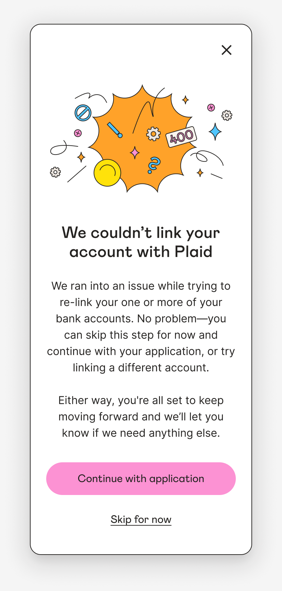

Case 06 of 08 · Iteration
Happy Money / Bank linking / 2025–2026
No dead ends when a connection breaks.
When a member’s bank connection expired, autopay failed silently, and people found out from a missed payment. I led design on a re-link experience that fixes it in place, and helped set the principle the team built around: no dead ends.
- The problem
- Expired bank connections broke autopay without warning, and re-linking meant starting setup over.
- Why it mattered
- Missed payments meant fees for members, support tickets for the team, and lost trust.
- My role
- Design lead within a shared effort. I designed the end-to-end re-link flow; a teammate designed the error state, and engineering built the retry logic.
- What I changed
- Members see the problem in context and re-link in place, with their autopay intact.
- The result
- Working across design and engineering, bank-link completion rose from 53.2% to 62.9%, a 9.7-point team result.
At a glance

01 / The situation
Autopay failed quietly.
Nobody knew a connection had expired until a payment bounced.
Applicants had the mirror problem: they were asked to link accounts again even when valid connections already existed.
02 / The tension
Engineering could see the break. Members couldn’t.
The fix lived in a moment of experience, not in the API.
- A fragile step
- Bank linking is where about a quarter of applicants used to drop.
- Two products
- The same problem showed up in servicing and in the application, owned by different teams.
- Noisy errors
- Many connection errors are temporary and resolve on their own.
03 / My read
Silence is a defect.
If someone can get stuck, they need a path forward, and we need to know about it.
We wrote it into the acceptance criteria, so it outlived any single screen.
“There is no dead-end state; the borrower always has a path forward.”
04 / The moves
Detect it, say it, fix it in place.
Re-link in context
A prompt at the right moment, and a re-link that keeps autopay settings.
Carry the pattern into the application
The same pattern, paired with retry logic that handles temporary errors before asking anything of the applicant.
Make silence visible
An error that showed zero occurrences despite hundreds of confirmed failures was treated as a reporting bug, not a healthy flow.
A test to separate the pieces
The re-link flow and retry logic shipped close together without an A/B test, so the lift is reported as a team result.
05 / What changed
More linked accounts, everywhere downstream.
53.2% → 62.9%, across about 7,000 applicants.
The gain held. Design’s re-authentication work and engineering’s retry logic shipped together.
More linked accounts, more autopay enrollments, fewer returned payments.
In hindsight
Some of design’s best work is a sentence in the acceptance criteria. “No dead ends” did more than any single screen.
Go deeperCollaboration, trade-offs, and what I’d do differently
What I’d do differently
For returning applicants, engineering proposed the interaction model before design was in the room. Next time I’d push to be there earlier.
How I brought people along
Add one real moment of influence: how “no dead ends” became an acceptance criterion: who you worked with and how you got it adopted.
Next / 07 / Advocacy
A decline shouldn’t be a dead end.
Let's talk
What are you working toward? Get in touch, read the resumé, or see all work.